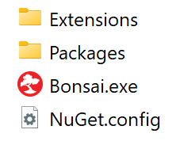
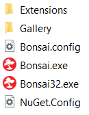

Bonsai Environments
By default, Bonsai is installed system-wide and can be used to run any workflow. However, as projects grow, it is common to have to install new packages to access specific functionality, or update the version of existing packages to get the latest bug fixes and patches.
If you have many projects, you might notice that older projects require specific obsolete package versions which are not compatible with newer projects, resulting in setups that break when the system-wide installation gets updated since only one version of the package can be installed at any one time.
Bonsai addresses these problems by supporting the creation of reproducible package environments. An environment is a self-contained, portable, installation of Bonsai that records a snapshot of all the packages required to run the workflows in your project. This makes it much easier to share a project with other people, or keep track of multiple separate projects in our local machine, and be assured you always have everything you need in the right place.
Creating an environment
The key to creating and updating environments is the Bonsai.config file, which keeps a record of all currently installed dependencies for a specific Bonsai setup. You can find this file in the same location of the Bonsai executable (Bonsai.exe). Anytime you install or update a package, Bonsai will automatically modify the config file.
The contents of the Bonsai.config file are compared with the current state of the Packages folder when Bonsai starts. If there are any missing packages the Bonsai bootstrapper will download them automatically to recover the expected state of the installation folder.
The easiest way to create a self-contained Bonsai environment is then to download the portable version of Bonsai and install the packages which are necessary for a specific project. For example, to share a project that depends on the Vision package:
- Start by downloading the latest Bonsai portable release.
- After extracting all the files from the
Bonsai.zipfile, your folder will look like this:

- Run
Bonsai.exe. During this first run, Bonsai will bootstrap the core dependencies and create an initialBonsai.configfile. - Install the Bonsai - Vision package using the
Package Manager. TheBonsai.configfile will be modified to specify this package as a new dependency. Any additional dependencies which might be needed for the package to run will also be added. - Close Bonsai.
Deploying your environment
Now that you have a Bonsai.config file with all the dependencies needed to run your project, how can you reproduce this installation elsewhere? As we saw in the previous step, when we run Bonsai.exe for the first time, the bootstrapper will attempt to download and resolve all core dependencies.
However, if a Bonsai.config file is found inside the executable folder, the bootstrapper will also resolve those dependencies at startup time. We can test this by doing the following:
- Create a new folder and repeat steps 1. and 2. from the previous section.
- This time, before running
Bonsai.exe, copy yourBonsai.configinto the folder:

- Run
Bonsai.exe. - Add a node that depends on the Vision package (e.g.
CameraCapture) to verify that the package has been successfully installed.
The new folder is now a copy of your previous environment.
Adding local dependencies
There is a second configuration file located next to the Bonsai.config file called NuGet.config. This file stores a list of all the remote, and local, NuGet package sources where the Package Manager should look for new packages.
The NuGet.config file can be modified to specify new package sources. For example, you may want to install local NuGet packages as dependencies (e.g. when testing your own packages).
To do this we just need to add new entries in the NuGet.config file. For example, to add a new package source named LocalPackages pointing to the Desktop folder:
<?xml version="1.0" encoding="utf-8"?>
<configuration>
<packageSources>
<add key="Gallery" value="Gallery" />
<add key="Bonsai Packages" value="https://www.myget.org/F/bonsai/api/v3/index.json" />
<add key="Community Packages" value="https://www.myget.org/F/bonsai-community/api/v3/index.json" />
<add key="LocalPackages" value="C:\Users\BonsaiUser\Desktop"/>
</packageSources>
</configuration>
You can also use relative paths if you want to keep package sources relative to the local environment. For instance:
<add key="LocalPackages" value=".\LocalPackages"/>
Note
NuGet.config files can be deployed hierarchically. You can have other NuGet.config files located higher in the file system to specify package sources that should be shared across multiple projects or specific for the local machine. For more information on this and other settings see the Common NuGet configurations documentation page.
Version control and "one-click" Bonsai deployment
Now that we know how to create and reuse Bonsai environments, we will show you one way to streamline this whole process.
- Create the
Bonsai.configand, if necessary, modify yourNuGet.configfiles. - Create a new folder and add these two files to it.
- Add the following
PowerShellscript to the folder (e.g.: open a new text file and copy-paste the code) and name itSetup.ps1:
if (!(Test-Path "./Bonsai.exe")) {
Invoke-WebRequest "https://github.com/bonsai-rx/bonsai/releases/download/2.7/Bonsai.zip" -OutFile "temp.zip"
Move-Item -Path "NuGet.config" "temp.config"
Expand-Archive "temp.zip" -DestinationPath "." -Force
Move-Item -Path "temp.config" "NuGet.config" -Force
Remove-Item -Path "temp.zip"
Remove-Item -Path "Bonsai32.exe"
}
& .\Bonsai.exe --no-editor
When executed, this small script will attempt to download a portable version of a Bonsai release, unzip it, and delete all the unnecessary files.
- Add a second batch command file
Setup.cmdthat targets and runsSetup.ps1. It will look this:
powershell -ExecutionPolicy Bypass -File .\setup.ps1
- Your folder should now contain only four files:
Setup.ps1Setup.cmd.NuGet.configBonsai.config
You can now simply share this folder with another person who will be able to easily install your current Bonsai dependencies by running the Setup.cmd or Setup.ps1 file.
As a final bonus, since all these files are encoded as text, they are easily version controlled using a distributed version control system such as git. Because of this, we often keep this folder inside our project repository and keep updating it with new dependencies as the project evolves.
To prevent installed packages and other binary files from being tracked, you can add the following lines to the .gitignore file for convenience:
Packages
*.exe
*.exe.settings